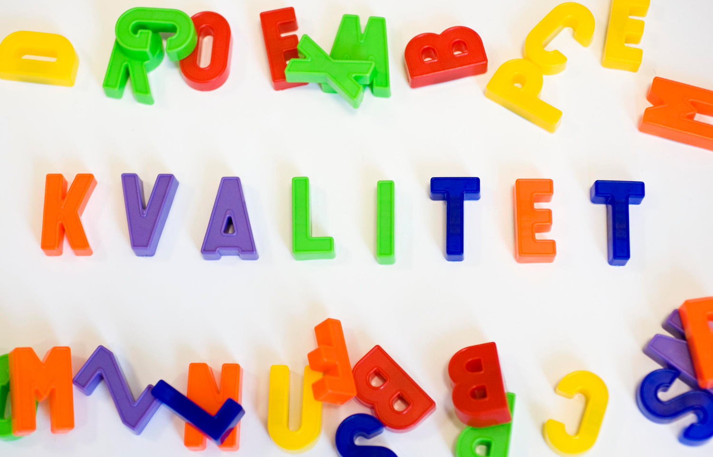

Introduction
In the last couple of years the field of natural language processing (NLP) has seen the rise of larger and larger language models (LMs), such as BERT, GPT, and others, based on the transformer architecture. These massive models are trained on a simple language modeling task, guessing words using the their previous or surrounding context. Due to the large number of parameters and the amounts of text the models see during training, they learn both syntactic and semantic patterns of words in contexts and thus to some extent language, resembling natural language understanding (NLU). From a practical point of view, these models serve as the basis for specialist models that are finetuned to solve a specific task, such as sentiment analysis, named entity recognition, and more. The GLUE and SuperGLUE benchmark suites are a collection of tasks designed to require some form of NLU to outperform a human baseline. With these benchmarks, model creators can easily test the usefulness of their new models on a wide range of tasks, while comparing the performance to other similar models. For the three Scandinavian languages Swedish, Danish, and Norwegian there are so far only few such tasks, that can be used to evaluate a transformer LM’s downstream performance. With the introduction of OverLim we hope to provide a simple benchmark to help assess the quality of the model, while comparing its performance to others. Due to its nature of being an automatically translated dataset, any performance differences should be interpreted carefully, as these models tend to learn with the help of data artifacts unrelated to NLU, of which the automatic translation might introduce even more. A more serious effort of a benchmark suite for Swedish is done in the SuperLim project, which is currently working on creating training data to accompany their test sets.

Creation and Content
From the 10 main GLUE tasks and the 8 SuperGLUE tasks (not counting the diagnostic datasets), we choose the following 11 tasks:
- MNLI – Multi NLI
- MRPC – Microsoft Reasearch Paraphrase Corpus
- QNLI – Question-answering NLI
- QQP – Quora Question Pairs
- RTE – Recognizing Textual Entailment
- SST – Stanford Sentiment Treebank
- STS-B – Semantic Textual Similarity Benchmark
- WNLI – Winograd NLI
- BoolQ – Boolean Questions
- CB – Commitment Bank
- COPA – Choice of Plausible Alternatives
The translations were done using Marian-NMT and the models for Swedish, Danish, and Norwegian bokmål provided by Opus-MT.
The original GLUE and SuperGLUE datasets use a test set, which does not have its labels published, as competitors send in their results on the test set, while the benchmark maintainers then evaluate on the hidden labels to avoid cheating by pre-evaluating on the test set, or even training on it. This means that we only have labels for the training and development splits. We use the former development split as the new test split and divide the training split with an 80-20 distribution into a new training and development split. Comparing the results to the English GLUE and SuperGLUE results is therefore difficult, given the smaller training set as well as the different test set.
Evaluation
Together this new dataset we want to give potential users some simple baselines and an easy way to evaluate their own models, and present some of our new and upcoming work-in-progress.
We evaluate the following models:
- AI-Sweden BERT-large
- mBERT-base
- ELECTRA-base
- Sentence-BERT
- KB-BART
- KB-BERT
- BERT 🤗
- Megatron-BERT-base 125k
- Megatron-BERT-base 600k
- Megatron-BERT-large 110k
KB-BART and the last four models in that list use the same amount of data, roughly 70GB. BERT 🤗 was trained using the huggingface 🤗 framework, concatenating multiple short documents into one long sequence, additionally to the traditional splitting of documents longer than 512 tokens into multiple sequences. The two Megatron-BERT-base models use the same setup, with one being trained for 125k steps and the other for 600k steps, to test the impact of longer training times. Finally, our large BERT model, also using the Megatron-LM framework, is only an intermediate model checkpoint. The intended training time is set to 500k steps and will be continued in the foreseeable future.
Each model was trained and evaluated five times with varying seeds. The final models were chosen according to their performance on the development set. The results below on the test set can therefore in some cases be lower than if the best model had been chosen directly with respect to test-set performance. This does not change the order of the best models with the exception for the RTE task. Some of the sub-tasks return two evaluation measures, accuracy and F-score, which are averaged here for simplicity. For the moment we do not evaluate on COPA.
The training- and evaluation script can be downloaded via the git repository.
| Model | mnli | mrpc | qnli | qqp | rte | sst | stsb | wnli | boolq | cb |
|---|---|---|---|---|---|---|---|---|---|---|
| AI-Sweden BERT-large | 83.49% | 86.67% | 90.10% | 68.69% | 70.40% | 91.28% | 87.61% | 46.48% | 70.28% | 59.14% |
| mBERT-base | 78.40% | 81.73% | 86.97% | 69.17% | 67.15% | 89.22% | 81.93% | 43.66% | 65.96% | 58.95% |
| ELECTRA-base | 78.18% | 76.66% | 84.07% | 60.68% | 54.51% | 88.19% | 10.54% | 60.56% | 62.35% | 56.08% |
| Sentence-BERT | 81.60% | 76.22% | 86.73% | 69.67% | 51.26% | 90.25% | 82.81% | 42.25% | 67.43% | 59.16% |
| KB-BART | 79.60% | 73.41% | 85.47% | 53.07% | 89.33% | 74.33% | 45.07% | 63.33% | 55.81% | |
| KB-BERT | 80.97% | 83.53% | 89.27% | 70.21% | 65.34% | 90.83% | 87.42% | 38.03% | 67.31% | 57.66% |
| BERT 🤗 | 81.15% | 76.75% | 87.63% | 62.65% | 52.35% | 90.71% | 54.83% | 47.89% | 64.98% | 60.44% |
| Megatron-BERT-base 125k | 80.23% | 78.40% | 88.38% | 73.73% | 65.34% | 88.88% | 83.61% | 50.70% | 64.98% | 59.19% |
| Megatron-BERT-base 600k | 82.48% | 76.34% | 89.13% | 75.56% | 63.90% | 90.37% | 77.46% | 40.85% | 62.39% | 57.61% |
| KB BERT-large 110k | 84.50% | 81.36% | 91.12% | 72.44% | 69.31% | 93.00% | 87.75% | 29.58% | 72.23% | 54.63% |
The two large models mostly come out on top, with some exceptions achieved by the new BERT-base models. All models fail on the WNLI set, with the exception of ELECTRA-base, which in turn underperforms on everything else; performance on this sub-task should therefore be taken (even more than the others) with a grain of salt. The MRPC and RTE tasks show that our models do not perform, compared to the large AI-Sweden BERT and Google’s multilingual BERT, well there. We believe that this might be due to difference in training data used, which relies much less on data crawled from the web.
Double-Check Performance on other Datasets
When evaluating models it is very important to test them on a wide variety of tasks. While it is tempting to test models on a test-suite like (Super)GLUE or OverLim, these in particular focus on one type of application. Large LMs also benefit other applications considered more basic such as tagging or parsing. Users should not choose their model because of some over-optimized aggregate of task-irrelevant scores, that favors larger models, which might even be too unwieldy for production purposes. When evaluating some of the models on our SUCX 3.0 - NER dataset, we see this clearly. For these experiments we again trained and evaluated each model five times, on the mixed-case variations of the SUCX 3.0 - NER dataset using both the original tags as well as the more stable simple ones. The reported F-scores on the test set were averaged to give a more even view.
| Model | Simple | Original |
|---|---|---|
| AI-Sweden BERT-large | 88.73% | 86.07% |
| KB-BERT | 89.35% | 86.71% |
| BERT 🤗 | 89.80% | 87.43% |
| Megatron-BERT-base 125k | 87.84% | 84.95% |
| Megatron-BERT-base 600k | 88.60% | 86.11% |
| Megatron-BERT-large 110k | 89.78% | 87.32% |
Here we can see that additional training time increases the performance for the two Megatron-BERT-base models, but even though they have been trained for longer and on more data, the small model differences let them stay behind the old KB-BERT. AI-Sweden’s Megatron-BERT-large model also performs worse than the KB-BERT, while our Megatron-BERT-large manages to barely outperform its smaller predecessor. The winner in this little competition however is the new BERT 🤗 which was also only trained for 125k steps, showing that there is no one best model.
One important aspect when comparing models has been omitted so far. Statistical significance testing is an important tool that is very much underused (such as here). With significance testing we can get a much better idea on which performance differences actually matter, or whether some model only performs consistently better, by already having seen five test-set examples during pretraining.
We invite everyone to test their models, optimize performance of already evaluated models, and compare, even across languages to better understand the strengths and weaknesses of language models.
Conclusion
With the publication of this dataset we hope to give the Scandinavian NLP community a new tool for evaluating their language models. Even though we think that any results on this data should not be used to claim the state-of-the-art of your newest model, we hope to instill a little bit of healthy competition into the community, especially for everyone developing multi-lingual models.
Acknowledgements
We gratefully acknowledge the HPC RIVR consortium (https://www.hpc-rivr.si) and EuroHPC JU (https://eurohpc-ju.europa.eu) for funding this research by providing computing resources of the HPC system Vega at the Institute of Information Science (https://www.izum.si).
Citation
@online{kurtz2022,
author = {Kurtz, Robin},
title = {Evaluating {Swedish} {Language} {Models}},
date = {2022-03-16},
url = {https://kb-labb.github.io/posts/2022-03-16-evaluating-swedish-language-models/},
langid = {en}
}